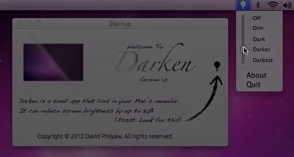

- ChicagolandMusicalTheatre.com : "David Philyaw ingeniously crafts a home-brewed lighting rig within the unorthodox space. Cleverly-placed lights evoke the ambience of a country concert, a quiet night at the barbecue, and more." (My Life is a Country Song, New American Folk Theatre, Chicago IL, Nov 2019)
- Winner of the 2015 Shuler Hensley Lighting Design award of the Georgia High School Musical Theatre Association for Godspell (school production, February 2015)
Welcome.
About Me
As a liberal arts graduate who majored in theatrical design, I am committed to communicating uniquely personal stories and bridging divides between people through art
As an electrician, I am organized, punctual, and understand the importance of being a team player in something larger than myself.
Theatre Resume | Customer Service Resume | Find me on LinkedIn!
Technical Theatre and Stage Lighting Design
I have worked on summer-stock theatre, live events, and collegiate productions with roles ranging from lightboard operator to master electrician and lighting designer. The following galleries showcase some of my best work.


{kind=link}
{kind=link}


Lightshow to C2C's "Down The Road"
I conceptualized and programmed this lightshow on an ETC Ion using seven Martin MAC Auras as my final project for my undergraduate lighting design course. If you see a message that the below video is not available, you need to view the video directly on Youtube due to copyright law in your country.
Production Experience
(Lighting Design & Master Electrician except as noted):
- (Lighting Design only) 25th Annual Mr. International Rubber Contest (The Vic Theatre, Chicago IL, Nov 2021)
- Lawrence University Spring Dance Show (May 2018, May 2019)
- Lawrence University Cultural Expressions Show (Feb 2016, Feb 2018)
- Lawrence University Fall Dance Show (Nov 2015)
- “Not About Angels” shadow dance concept piece (named “Best in Show,” highschool multidisciplinary festival, Rabun Gap GA, April 2015)
- (Projections and Effects only) North Georgia Performing Arts Dance Concert (Rabun Gap GA, May 2015)
- Lawrence University Fall Opera Scenes (Fall 2018)
- (Lightboard operator only) The Count Ory (Lawrence University Opera, 2018)
- (Lightboard operator only) A Man of No Importance (Lawrence University, Oct 2016)
- (Master Electrician only) Much Ado about Nothing (Lawrence University, Feb 2016)
- Elephant’s Graveyard (highschool production, Oct 2014)
- My Life is a Country Song (New American Folk Theatre, Chicago IL, Nov 2019)
- Little Shop of Horrors (Student Produced Musicals at Lawrence University; SPAMALU, April 2019)
- Annie Jr. (North Georgia Community Theatre, Dillard GA, Aug 2015)
- Godspell (highschool production, February 2015)
- Smile (highschool production, February 2014)
- Cirque Tallulah (Rabun County Skywalk Festival, June 2015)
- Cirque Tortuga (highschool production, November 2014)
- Cirque Fiaba de Grimm (highschool production, May 2014)
Art and Photography
Please enjoy the following photography projects I've worked on via my Flickr account and Youtube channel.
Something is Happening: Light More Light
For this photo collection, I wanted to create a tongue-in-cheek reflection of the Lawrence University motto, "light more light." I took both a literal interpretation (photos of lights) as well as an unconventional approach (photographing angles that don't normally match with the human eye). I took just over 200 stills using a Sony Nex-F5 camera, and edited them down into the following set using Snapseed, a highly-advanced yet free photo editing app by Google

Time and Space Experimental Video
Mirrors and light rays have an incredible potential to showcase non-traditional notions of time and space. The purpose of this video is to capture a physical and literal "allatonceness" in the world of reflections. The reflective rubber catsuit further develops me theme of reflections by providing an unconventional reflecting surface that does not just reflect perfectly, but also distorts and bends the light as I move through space.
Walk_Forward: Dynamic Public Art
This public art installation at utilizes an Xbox One Kinect sensor and Processing to create a dynamic wall projection. As viewers move closer, their sillhoutes cycle through the hues of the rainbow. White stripes on the floor are represented as white stripes on the projection to further develop a sense of augmented reality.
How Color and Angle of Light Affect Mood
This animation was created in Blender 3D to illustrate basic concepts in theatrical lighting design for my Scientific Visualization / Infographic Design course.
Lux
This mud-stencil piece was inspired by the public art and murals of Nicolas Lampart. It aims to critique conventional depictions of (incandescent) light via the juxtaposition of a compact fluorescent lightbulb with the Latin word for “light” (which also relates the piece to the Lawrence University motto, Veritas est Lux, or Truth is Light). Several copies of this stencil were placed underneath LED street lamps throughout campus and were displayed until the next rainfall.

Fetish Texture Photography
I knew in advance of this project that I would be attending and volunteering for Mr. International Rubber, a rubber fetishist conference and contest held annually in Chicago, IL., and I thought it would provide an excellent opportunity to create a final project based on the visual texture of rubber. The Saturday-night portion of the weekend-long contest was held afterhours in the Museum of Contemporary Art in Chicago, IL., with a pre-show cocktail hour held in the first floor gallery. Using a Sony NEX-f5 camera, I went around to various patrons and asked if I could take photos of their gear, both candidly and posed.

Mobile Smartphone and Mac OS X App Development
An archive of what I have coded in the past is below. However, I am no longer actively developing these apps or keeping up with their source code. (Please note that links to the iTunes App Store and Google Play may not function correctly.)
{kind=link}
Presidents for iOS
United States Presidents Free (for iPhone and iPod) was the first app I ever coded. The idea came to me near the end of my eight grade American History course. Our teacher would run special drills, which he called PSR's (Presidential Speed Relays) to help us remember the American presidents. Unfortunately, most of the class did very poorly, and my previous interest in computer programming blossomed into the idea of aiding my fellow peers in remembering the American presidents through an iPhone app. Many tutorials and weeks laters, I presented them with United States Presidents Free. Version 2.0 has now been released, featuring a fully updated interface for iOS 7 and the iPhone 5!
Available on the App Store
{kind=link}
Dewey Decimal for iOS
Dewey is an app I wish to dedicate to my mom. It was the second iPhone app I made, and was inspired by her getting a job at the local public library. It used the Dewey Decimal System to organize their books, and as she didn't know DDC (Dewey Decimal Classification), I thought it was an excellent idea to code an app for her. While the full Dewey system goes down into the thousandths, this app merely goes down to the ones digit, which is sufficient for most people. Dewey retails for 99¢.
Available on the App Store

Commonly Misused Words for iOS and Android
Are you studying for the GRE, SAT, TOEFL, or any other standardized test covering vocabulary and word usage? Would you like to increase your mastery of the English language? Whether you’ve been speaking and writing English for your whole life or are in the process of learning the language, some words can be confusing. This app is your pocket reference for studying some of the most commonly misused words. Unlike a dictionary app, Commonly Misused Words takes pairs or trios of words that are frequently confused for each other and explains the differences. This app is designed for speed and simplicity in navigating the myriad subtleties found in the English language.
Available on the App Store
Get it on Google Play

{kind=link}
Darken for Mac OS X
Darken is an app inspired by the dazzling display of the Apple iMac. Sometimes, especially in a dark setting, the brightness, even at its lowest setting, can just be too much. However, this is where Darken excels. By adjusting a menulet slider, the application applies a virtual shade over your screen. This "shade" is of varying opacity, ranging from 20% to 80%.
Darken 1.1, which includes bug fixes, a new icon, and the option to dim only the main monitor in a dual monitor setup, can be downloaded free of charge here .
Looking for the original 1.0 release? Find it here .